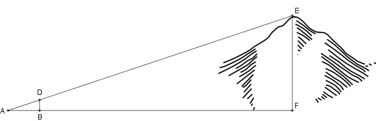
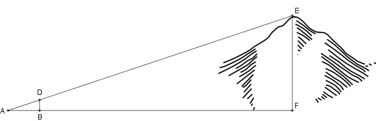

Aufgabe 52
In einer Entfernung von 1 800 m peilt eine
Person mit einer einfachen Vorrichtung,
siehe Skizze, die Spitze eines Berges an.
Wie weit ist die Spitze Luftlinie entfernt,
wenn die Augenhöhe vernachlässigt wird?
 
Die Dreiecke ABD und AFE sind ähnlich, weil sie
in 2 Winkeln übereinstimmen.
∢ABD = 90° und ∢AFE = 90° und ∢ DAB = α.
50 cm = 0,5m, 40 cm = 0,4 m
1 800 m
Ähnlichkeitsfaktor k = ---------- = 4 500
0,4 m
EF
k = ------ |*0,5
0,5
k * 0,5 = EF = 4 500 * 0,5 m = EF = 2 250 m
oder Strahlensatz:
EF 1 800
------ = -------- |*0,5
0,5 0,4
1 800
EF = ------- * 0,5 m EF = 2 250 m
0,4
oder
EF : 0,5 = 1 800 : 0,4
Inneres Produkt = äußeres Produkt
0,5 * 1 800 = EF * 0,4 |:0,4
EF = 2 250 m

Die Dreiecke ABD und AFE sind ähnlich, weil sie
in 2 Winkeln übereinstimmen.
∢ABD = 90° und ∢AFE = 90° und ∢ DAB = α.
50 cm = 0,5m, 40 cm = 0,4 m
1 800 m
Ähnlichkeitsfaktor k = ---------- = 4 500
0,4 m
EF
k = ------ |*0,5
0,5
k * 0,5 = EF = 4 500 * 0,5 m = EF = 2 250 m
oder Strahlensatz:
EF 1 800
------ = -------- |*0,5
0,5 0,4
1 800
EF = ------- * 0,5 m EF = 2 250 m
0,4
oder
EF : 0,5 = 1 800 : 0,4
Inneres Produkt = äußeres Produkt
0,5 * 1 800 = EF * 0,4 |:0,4
EF = 2 250 m